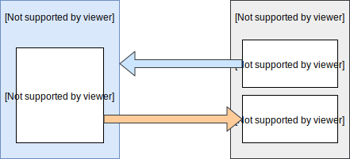
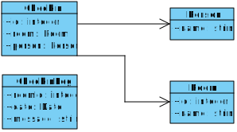
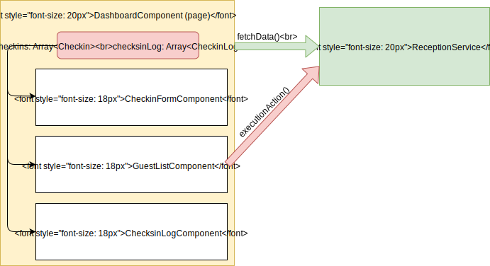
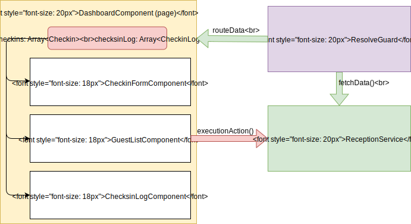

Pattern di sviluppo "moderno" con Angular, React e Vue
Andrea Briganti
Presentazione e demo: https://bit.ly/2HPX7Q1
Lo sviluppo "canonico"
Una buona dose di HTML...
<div class="content bg-tab" style="padding-left:5px;padding-top:10px;">
<div class="row collapse border-bottom-1">
<div class="large-6 medium-6 small-6 columns">
<h6 class="f-yellow">Nome Squadra</h6>
Lo sviluppo "canonico"
... contornato da Javascript qui e li.
function update_livepanel() {
var placeHolder = $("#live-container");
$.get("/api/v1.0/livematches",function(data,status,xhr){
if(oldlastupdate == null || data.lastupdate != oldlastupdate) {
oldlastupdate = data.lastupdate;
var html = template(data);
placeHolder.empty();
placeHolder.append(html);
placeHolder.foundation('reflow');
[...]
}
Come diventa il codice:
La reazione di chi deve modificare il codice
...specie se il codice è altrui
Maggiori limiti attuali
- Difficoltà nell'organizzare id e classi per gli script
- Javascript è un linguaggio poco "ordinato"
- Confusione al crescere della dimensione
- Possibilità praticamente nulla di fare refactor
- Il codice della pagina non è semantico
 HTML5 e semantica
HTML5 e semantica

 Web Components
Web Components
Strutture complesse...
<div class="menu-container">
<ul class="main-menu">
<li><a href="#">Voce Menu 1</a></li>
<li><a href="#">Voce Menu 2</a></li>
</ul>
</div>
...acquistano semantica
<menu>
<menu-voce url="#">Voce Menu 1</menu-voce>
<menu-voce url="#">Voce Menu 2</menu-voce>
</menu>
Per maggiori info: http://webcomponents.org
Web Components e frameworks
Benché non tutti i browser supportino i webcomponents, i principali framework per lo sviluppo sul web ne utilizzano i concetti cercando di separare la presentazione del componente dalla sua logica.
Cosa impareremo in questo workshop?
- Le nozioni base su Angular, React e Vue
- Comprendere i pattern comuni principali
- Essere consapevoli che si possono costruire unit test
Di cosa ho bisogno per mettere in pratica ciò che imparerò qui?
- Una versione recente di Nodejs
- Un IDE/Editor con il quale vi sentite a vostro agio (VSCode? Webstorm?)
- (Opzionale) Un terminale a linea di comando
- (Ovviamente) Una connessione Internet
Linguaggio consigliato 
Per lo sviluppo utilizzeremo Typescript
- Codice più ordinato e programmazione orientata agli oggetti
- Rilevazione di errori a "tempo di compilazione"
- Supporto al completamento automatico negli IDE
La sintassi di Typescript va "nella direzione" di Ecmascript 6 e il compilatore genera all'occorrenza codice ES 5 e 6.
Alternative a Typescript
Attualmente è la best choice per Angular, opzionale ma gradito per gli altri framework.
Tuttavia sviluppare in Typescript garantisce la rilevazione degli errori a tempo di compilazione, ecc...
In alternativa possiamo utilizzare:
 Ecmascript 5
Ecmascript 5- Ecmascript 6 + babel
Architettura base di una webapp
Creepy Artist Theater Congress Center
Vogliamo realizzare una piccola webapp per la reception di un centro congressi.
Allo scopo è già stata creata una mini api rest in nodejs che potete trovare nella directory restapi dei demo
$ npm install
$ npm run start
workshop checkin RESTful API server started on: 3000
Le api risponderanno al seguente indirizzo http://localhost:3000
 Creazione di una webapp Angular
Creazione di una webapp Angular
Per creare una nuova applicazione Angular si utilizza Angular-cli che genererà tutto il necessario per il progetto.
$ npm install -g @angular/cli
$ ng new cat-congress-center-app
? Would you like to add Angular routing? Yes
? Which stylesheet format would you like to use?
> SCSS [ http://sass-lang.com/documentation/file.SASS_REFERENCE.html#syntax ]
SCSS è consigliato rispetto al CSS classico
Pattern: suddividere l'applicazione in moduli
Lo sviluppo dell'applicazione non deve avvenire aggiungendo componenti e files nel modulo "App", dobbiamo piuttosto suddividere il progetto in moduli
$ ng generate module Reception --routing
Le good practice guidelines su come organizzare moduli e files è disponibile al seguente link
Composizione di un modulo
Ogni modulo in genere è composto da:
- Definizione del modulo (reception.module.ts)
- Definizione del routing (reception-routing.module.ts)
- Definizione dei modelli
- Librerie di funzioni, servizi, guards e filters
- Componenti
Pattern: Creazione dei modelli
Per il nostro modulo creiamo un file per ogni modello
export interface CheckinLog {
date: Date;
message: string;
}
export interface Person {
name: string;
}
export interface Room {
id: number;
name: string;
}
Pattern: Creazione dei modelli
import {Person} from './person.model';
import {Room} from './room.model';
export interface Checkin {
id: number;
person: Person;
room: Room;
}
ATTENZIONE: la creazione è imprescindibile anche se i dati che maneggiamo sono identici a quelli che riceviamo dalle api rest. Pena errori non facilmente rilevabili a tempo di compilazione e limitata possibilità di refactoring
Pattern: Utilizzare interfacce al posto di classi
Nella definizione dei modelli abbiamo utilizzato delle interfacce al posto delle classi perché le classi in Javascript hanno maggior overhead e il linguaggio permette la maggiore flessibilità di creazione (anche on the fly).
let checkin: Checkin = {id: 1, room: {id: 1, name: 'room1'},
person: {name: 'person1'}};
Creazione di un servizio
Creiamo il servizio che farà da tramite tra l'applicazione e le api (o più in generale per la logica dell'applicazione)
$ cd reception/shared
$ ng generate service Reception
Il comando creerà un servizio vuoto e una test unit base che può essere utile per verificare la corretta attivazione del servizio.
Esempio di funzione in un servizio
public getRooms(): Observable<Array<Room>> {
return this.http
.get<Array<Room>>(`${environment.apiUrl}/room`).pipe(
map((responseData) => convertApiRooms(responseData)));
}
Observable vs Promise

Nota bene: con gli observable la chiamata non parte fino a quando non si chiama ".subscribe()"
Dependency injection
Osserviamo il costruttore del servizio in esempio
constructor(private http: HttpClient) {}
Tutto ciò che è nel costruttore verrà iniettato da Angular alla creazione della classe.

Pattern: Chiamate rest e logica solo nei servizi
Spesso la tendenza è quella di inserire troppa logica e le chiamate rest nei componenti.
Ciò è
fortemente sconsigliato (se non proibito).
Pattern: Tipi come contratti
Discorso applicabile universalmente è non solo ai servizi è l'importanza di definire i tipi per le variabili, i parametri e i tipi di ritorno delle funzioni
public getRoom(roomId: number): Observable <Room> {
Essi definiscono dei contratti che vi tengono al sicuro da errori e rendono possibile il refactor dell'applicazione
"any" non è un contratto accettabile e va bandito
Pattern: Adattare il dato nel servizio
A volte i dati dalle api rest devono essere trasformati o possono cambiare nel tempo. Invece di cambiare il modello si deve cercare di adattarlo in modo da non dover cambiare il resto dell'applicazione (e quindi testare nuovamente tutto)
function convertApiCheckinlog(data: any): CheckinLog {
return {
date: new Date(Date.parse(data.date)),
message: data.message
};
}
Testing del servizio
Il file reception.service.spec.ts contiene i test per il servizio dove è possibile mockare il client Http di Angular in modo da simulare diversi tipi di riposta (compese anche diverse tipologie di errore)
Creazione di un componente
Per la creazione del componente utilizziamo sempre Angular Cli
$ cd reception/
$ ng generate component Dashboard --style scss
Il comando creerà un componente vuoto e una test unit base che può essere utile per verificare la corretta attivazione del componente.
Anatomia di un componente: stile
#guest-list.component.scss
table {
border-collapse: collapse;
}
th, td {
border-bottom: 1px solid #ddd;
min-width: 100px;
padding-right: 10px;
padding-left: 10px;
}
Qui vediamo i tag html "base" table, th e td perchè Angular utilizza lo shadow dom anche per lo stile!
Anatomia di un componente: classe
@Component({
selector: 'app-guest-list',
templateUrl: './guest-list.component.html',
styleUrls: ['./guest-list.component.scss']
})
export class GuestListComponent implements OnInit {
constructor(private receptionService: ReceptionService) { }
public checksin: Array<Checkin>;
public checkout: EventEmitter<void> = new EventEmitter<void>();
ngOnInit() {}
ngOnInit() è una funzione speciale eseguita all'attivazione del componente. Per gli altri eventi del ciclo di vita dei componenti vai a questo link
Anatomia di un componente: template
<thead class="reception-guest-list-header">
<tr><th>Room</th>
<th>Person</th>
<th></th> </tr>
</thead>
<tbody>
<tr *ngFor="let checkin of checksin">
<td>{{checkin.room.name}}</td>
<td>{{checkin.person.name}}</td>
<td><a href="javascript:void(0)"
(click)="checkoutPerson(checkin.id)">checkout</a></td>
</tr>
</tbody>
Nel template possiamo accedere a tutte le proprietà e metodi della classe componente
Two-Way Data Binding

PATTERN: Organizzazione dei componenti
Solo le view dovrebbero interrogare i servizi
Comunicazione padre figlio
export class GuestListComponent implements OnInit {
@Input()
public checksin: Array<Checkin>;
@Output()
public checkout: EventEmitter<void> = new EventEmitter<void>();
<div class="reception-dashboard">
<app-guest-list [checksin]="checksin"
(checkout)="onCheckoutOrCheckin()"></app-guest-list>
</div>
Con @Input() indichiamo gli attributi in ingresso, con @Output() gli eventi che possono essere lanciati.
Guards come strumento per ottenere i dati
Il render avviene dopo aver ottenuto i dati
Tipologie di guards
Le guards agiscono sui cambi di rotta e possono essere di diversi tipi:
- Resolve: prefetch dei dati
- CanActivate - CanActivateChild - CanLoad: posso attivare la rotta? (Esempio sono autenticato?)
- CanDeactivate: posso abbandonare la rotta? (Esempio dati non salvati)
Testing dei componenti
Nel file guest-list.component.spec.ts è presente un esempio di come creare alcune unit test per i componenti. Ricordatevi di mockare i servizi che utilizzate con Spy e non è utile fare il mock delle richieste alle api rest.
Esecuzione task per lo sviluppo/build
- ng serve: esegue il server web locale per sviluppo
- ng build: compila il progetto per un eventuale deploy
- ng test (--code-coverage) e ng e2e: esegue gli unit e e2e test
- ng lint: verifica la corretta formattazione del codice
Toolkit e librerie per Angular
Per Angular sono disponibili diversi toolkit e librerie di terze parti. Esempi:
- PrimeNg
- Angular Material
- Auth0 Angular Jwt
 Creazione di una webapp react
Creazione di una webapp react
Esistono diverse modalità, per questo workshop utilizzeremo il tool create-react-app di Facebook
$ npx create-react-app cat-app --typescript
Non verranno chieste ulteriori domande e verrà creato lo scheletro di un'applicazione base
Librerie di terze parti "Must have"
Alcune feature essenziali non sono fornite nativamente in React, ma esistono diverse librerie "standard de facto":
- Redux: state container per l'applicazione (non più solo per il componente)
- React router dom: funzionalità di routing
- Axios: client per rest api
- Ezyme: libreria per il testing dei componenti
Creazione dei modelli
I modelli dell'applicazioni sono esattamente quelli realizzati dall'esempio in Angular
Pattern: Creazione dei servizi
In assenza di dependency injection, invece di creare delle classi possiamo creare dei moduli (file typescript/javascript) dedicati, contenente le funzioni del servizio:
export function apiGetChecksinLog(): Promise<CheckinLog[]> {
return Axios.get(`${APIURL}/checkinlog`)
.then((response) => response.data.map(convertCheckinLog));
}
Vengono usate le Promise perché Axios non utilizza gli Observable
Creazione dei componenti
La creazione dei componenti avviene creando semplicemente un file con estensione .tsx
Benché in react non c'è il concetto di modulo, si consiglia di suddividere i componenti, servizi e modelli in sottocartelle.
Anatomia di un componente: classe
class App extends Component<AppComponentProps, AppComponentState> {
constructor(props: AppComponentProps) { super(props); }
refreshData() {
apiGetChecksin()
.then(data => { newState.checksin = data; this.setState(newState); });
}
componentDidMount() {
this.refreshData();
}
render() {
componentDidMount() e render() sono due funzioni del ciclo vita di react (link)
Anatomia di un componente: props
I props descrivono gli attributi in entrata e uscita al componente
export interface ChecksinListProps {
checksin: Array<Checkin>;
onCheckout?: () => void;
}
export class ChecksinList extends Component<ChecksinListProps> {
Sono l'equivalente degli @Input() e @Output() di Angular
Anatomia di un componente: state
Lo state contiene i dati del componente
interface AppComponentState {
checksin: Array<Checkin>;
checksinLog: Array<CheckinLog>;
}
class App extends Component<AppComponentProps, AppComponentState> {
Ogni volta che aggiorniamo lo stato con la funztione this.setState(newState), React procederà a renderizzare nuovamente il componente
Anatomia di un componente: render
render() {
return (
<div className="App">
<h1>Creepy Artist Theatre Congress Center</h1>
<ChecksinList checksin={this.state.checksin} onCheckout={this.refreshData}/>
<ChecksinLog checksinLog={this.state.checksinLog} />
</div>
);
}
L'oggetto di ritorno è un di tipo JSX.Element e contiene markup html che può essere reso dinamico utilizzando logica in typescript/javascript. Per maggiori info doc JSX
Testing dei componenti
Nel file App.test.tsx è presente un esempio di come creare alcune unit test per i componenti.
Diverso framework, stessi concetti
A parte le differenze mostrate, tutti i pattern spiegati in precedenza devono essere garantiti (tipi come contratti, organizzazione dei componenti, comunicazione padre-figlio, ecc...)
La strategia di JSX di mischiare presentazione e logica del componente può portare in tentazione, ma sta allo sviluppatore resistere :)
Esecuzione task per lo sviluppo/build
- npm run start: esegue il server web locale per sviluppo
- npm run build: compila il progetto per un eventuale deploy
- npm run test: esegue gli unit test
 Creazione di una webapp Vue
Creazione di una webapp Vue
Per creare una nuova applicazione Vue si utilizza Vue-cli che genererà tutto il necessario per il progetto.
$ npm install -g @vue/cli
$ vue create cat-project
? Check the features needed for your project:
(*) Babel
(*) TypeScript
(*) Router
(*) CSS Pre-processors
(*) Linter / Formatter
(*) Unit Testing
Le funzionalità selezionate permettono la creazione di webapp complesse
Views vs Moduli
Vue suddivide l'applicazione in views (equivalenti ai component Angular che servono una pagina) e i components che sono i mattoni che le compongono.
Non è obbligatorio suddividere l'applicazione in sottodirectory per emulare i moduli, ma se l'applicazione aumenta in dimensione la suddivisione è da considerare.
Creazione dei modelli
I modelli dell'applicazioni sono esattamente quelli realizzati dall'esempio in Angular e React
Creazione dei servizi
Anche in questo caso non abbiamo la dependency injection, ma il servizio può essere del tutto identico a quello realizzato per React.
Vue non ha un client per le api rest predefinito, quindi utilizziamo nuovamente Axios.
Testing dei componenti
Nei files homeview.spec.ts e checksinlog.spec.ts sono presenti alcune test unit per view e componenti.
Esecuzione task per lo sviluppo/build
- npm run start: esegue il server web locale per sviluppo
- npm run build: compila il progetto per un eventuale deploy
- ng run test:unit: esegue gli unit e e2e test
- ng lint: verifica la corretta formattazione del codice
Diverso framework, stessi concetti
A parte le differenze mostrate, tutti i pattern spiegati in precedenza devono essere garantiti (tipi come contratti, organizzazione dei componenti, comunicazione padre-figlio, ecc...)
In realtà Vue ha molte analogie con Angular, lo pone quindi come ottima alternativa quando non si vuole raggiungere elevati livelli di complessità.
Conclusioni
Ogni framework ha le sue peculiarità, ma conoscendo le buone pratiche di base si può scegliere quello da utilizzare a seconda delle esigenze.